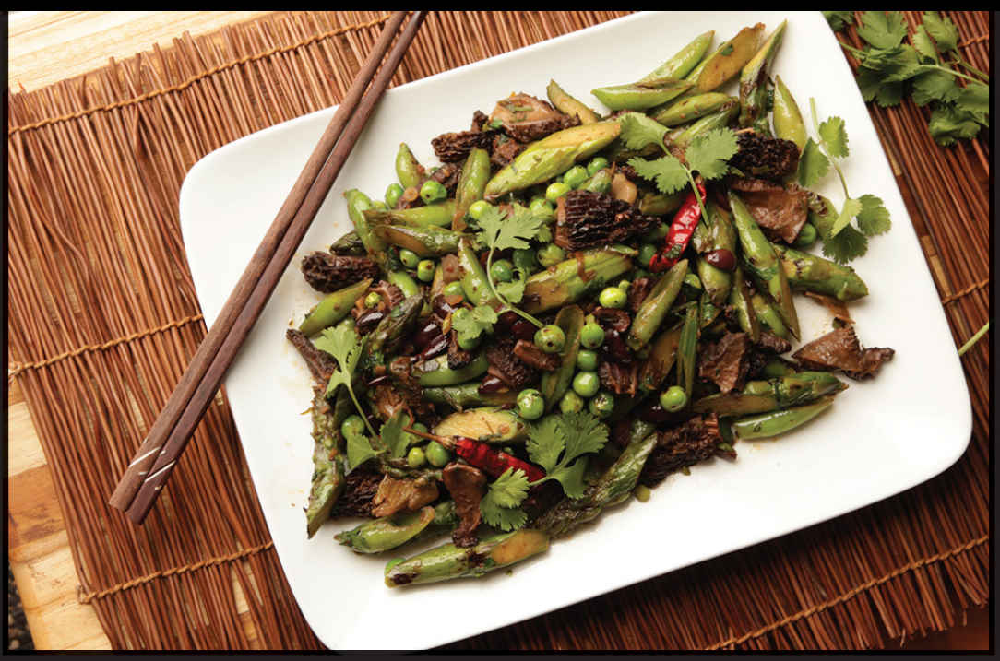

SPRING VEGETABLES WITH OLIVES AND SICHUAN PEPPERCORNS
|
Yield Serves 4 |
Active Time 15 minutes Total Time 30 minutes |
INGREDIENTS
For the Green Vegetables:
Kosher salt
8 ounces (225 g) asparagus, cut on a bias into 2-inch pieces
4 ounces (about 1 cup/120 g) shelled English peas or frozen peas, thawed
8 ounces (about 2 cups/225 g) sugar snap peas, split in half on a sharp bias
For the Stir Fry:
3 tablespoons (45 ml) peanut, rice bran, or other neutral oil
4 ounces (120 g) shiitake mushrooms, stems discarded, caps cut into ¼-inch slices
4 small hot dried chiles (such as árbol or Japones), stems removed, snipped into ½-inch pieces with kitchen shears
1 teaspoon (2 g) Sichuan peppercorns
¼ cup (about 3 ounces/80 g) pitted kalamata or other black olives, minced
1 tablespoon (7.5 g) minced garlic (about 3 medium cloves)
1 tablespoon (7.5 g) minced fresh ginger (about ¾-inch segment)
1 tablespoon (15 ml) light soy sauce or shoyu
1 tablespoon (15 ml) Chinkiang or balsamic vinegar

This recipe started as a dinner party where I planned on stir-frying some green beans to serve alongside a batch of Mapo Tofu (this is the format for many of my dinner parties). But seeing as it was early spring, I decided to alter the recipe and pair it with my favorite springtime activity: raiding the vegetable section.
Asparagus, peas, and snap peas might not be typical ingredients at your average Chengdu greasy spoon—but hey, we’ve managed to transform Western broccoli, something almost entirely unheard of in China, into the most common vegetable on the takeout menu, so why not branch out even farther? In fact, I ended up taking it an extra step farther from China by adding a handful of olives I found languishing in the back of my fridge. The end result is a sort of play on the traditional Sichuan combination of long green beans stir-fried with preserved mustard root (ya cai, which has a pungent, salty flavor similar to that of olives).
And because I happened to spot some morel mushrooms at the farmers’ market and they have such an affinity for green vegetables, I ended up adding some of those to the stir-fry as well. It was lip-smackingly delicious.
Since that initial accidental dinner, I’ve made similar dishes using different vegetables (fiddleheads, snow peas, and, yes, green beans all work well) as well as different mushrooms (the written recipe calls for shiitake, which are more widely available than morels, but use any mushroom you’d like—maitake are especially tasty) while keeping the same base flavor and the same technique. I haven’t run into a single failure yet, which leads me to believe that in the future maybe I’ll just stir-fry ALL THE VEGETABLES.
DIRECTIONS
1For the Green Vegetables: Bring a couple quarts of heavily salted water to a boil in a wok. Add the asparagus, peas, and sugar snap peas and cook for 1 minute. Drain the vegetables and transfer to a couple of large plates or a rimmed baking sheet. Spread into a single layer and let the vegetables air-dry and cool while you prepare the remaining ingredients.
2For the Stir-Fry: Heat a wok over high heat until lightly smoking. Add 1 tablespoon (15 ml) of the oil and swirl to coat. Add the mushrooms and stir-fry until spotty brown and crisp in spots, about 1 minute. Transfer to the tray with the green vegetables.
3Return the wok to high heat until smoking. Add the remaining 2 tablespoons (30 ml) oil and swirl to coat. Immediately add the dried chiles and Sichuan peppercorns and cook until aromatic, about 10 seconds. Immediately add the olives, garlic, and ginger and cook, stirring frequently, until fragrant, about 30 seconds. Return the mushrooms and vegetables to the wok and toss to combine. Swirl in the soy sauce and vinegar around the edge of the wok and toss to combine. Transfer to a serving platter and serve immediately.